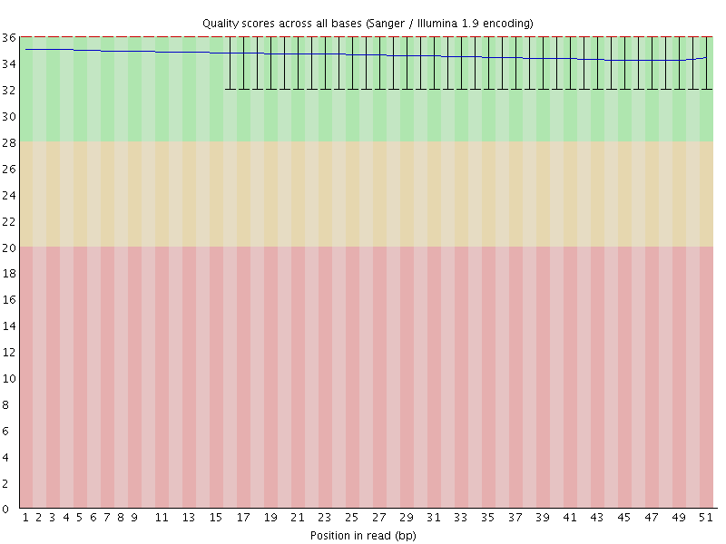
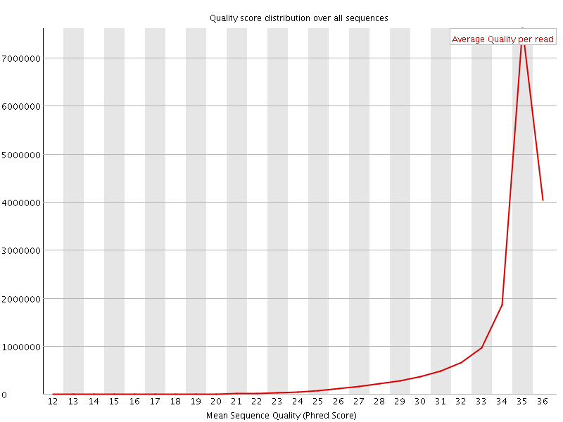
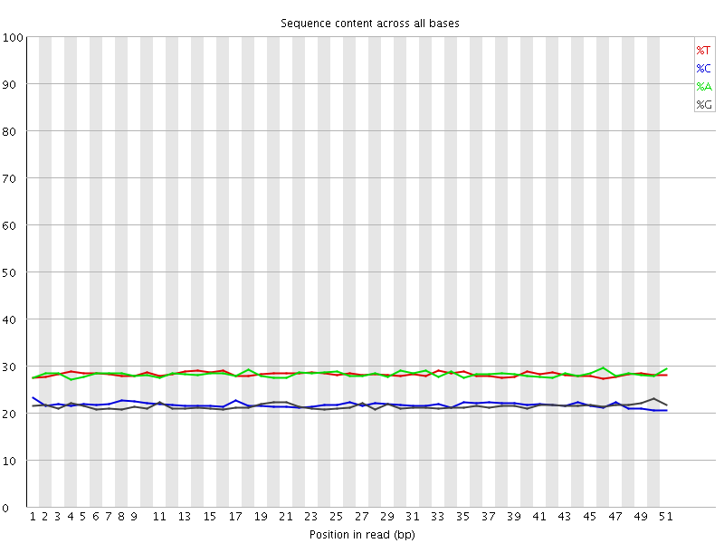
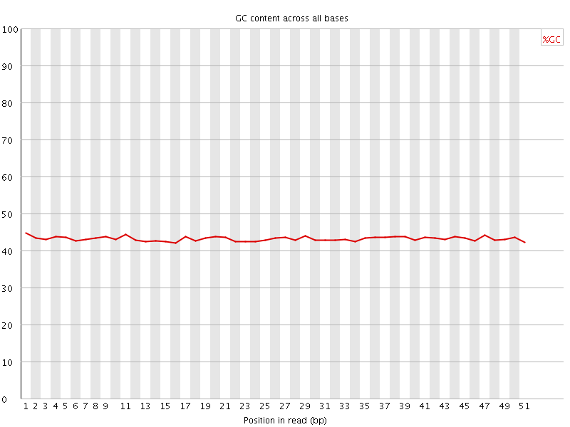
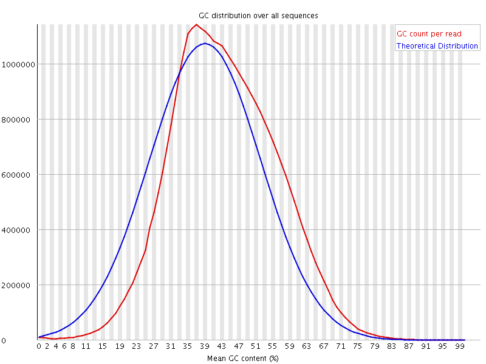
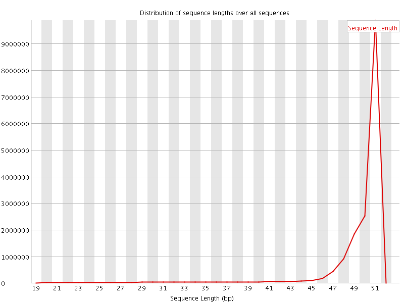
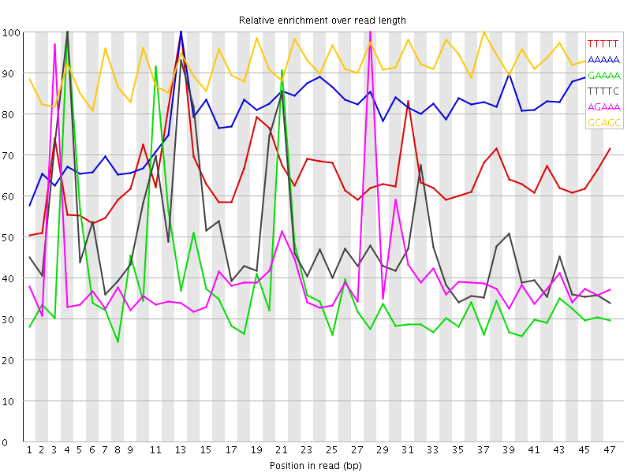

![[OK]](Icons/tick.png) Basic Statistics
Basic Statistics
| Measure | Value |
|---|---|
| Filename | 030-F0_S1_L002_R1_001_trimmed.fq.gz |
| File type | Conventional base calls |
| Encoding | Sanger / Illumina 1.9 |
| Total Sequences | 17047708 |
| Filtered Sequences | 0 |
| Sequence length | 20-51 |
| %GC | 43 |
Per base sequence quality

Per sequence quality scores

Per base sequence content

Per base GC content

![[WARN]](Icons/warning.png) Per sequence GC content
Per sequence GC content

Per base N content

Sequence Length Distribution

Sequence Duplication Levels

Overrepresented sequences
| Sequence | Count | Percentage | Possible Source |
|---|---|---|---|
| CAAGAAAACTGAAAATCATGGAAAATGAGAAACATCCACTTGACGACTTGA | 19113 | 0.11211477812735882 | No Hit |
Kmer Content

| Sequence | Count | Obs/Exp Overall | Obs/Exp Max | Max Obs/Exp Position |
|---|---|---|---|---|
| TTTTT | 5678110 | 4.0417557 | 6.2216597 | 13 |
| AAAAA | 5652330 | 4.0386777 | 5.0920467 | 13 |
| GAAAA | 3422730 | 3.2217922 | 8.541691 | 4 |
| TTTTC | 3466650 | 3.1974783 | 6.4280343 | 4 |
| AGAAA | 3310770 | 3.116405 | 7.777585 | 28 |
| GCAGC | 1452930 | 3.020558 | 3.300139 | 37 |
| CCAGG | 1413710 | 2.939022 | 5.80458 | 35 |
| AAGAA | 2738760 | 2.577976 | 5.447491 | 2 |
| GGAAA | 1954275 | 2.4233918 | 8.48365 | 20 |
| GAGAA | 1937895 | 2.4030802 | 8.730969 | 27 |
| AAAAT | 3164195 | 2.259154 | 5.9091477 | 22 |
| GGTGG | 1032410 | 2.2201762 | 5.413667 | 18 |
| TCCTC | 1429120 | 2.2132423 | 5.6436577 | 24 |
| GAGGA | 1352675 | 2.2097576 | 5.189224 | 2 |
| CCACC | 1082645 | 2.1742365 | 6.357917 | 8 |
| TGGAA | 1734010 | 2.1486244 | 5.99449 | 19 |
| TGAAA | 2149200 | 2.0214944 | 6.7170143 | 10 |
| TTCAG | 1660910 | 2.0212266 | 5.424853 | 15 |
| CTGAA | 1636945 | 1.9935727 | 7.950106 | 9 |
| AAATG | 2090240 | 1.9660381 | 6.8675613 | 23 |
| TCCAC | 1267360 | 1.9642167 | 5.6879344 | 35 |
| CATTT | 2069950 | 1.9106737 | 6.6860075 | 1 |
| AAAAC | 2006735 | 1.8565385 | 6.452271 | 5 |
| GTGGA | 1082690 | 1.7673647 | 6.264177 | 47 |
| TGAGA | 1423380 | 1.7637203 | 8.070366 | 26 |
| CCACT | 1066215 | 1.6524721 | 5.8664656 | 36 |
| CATGG | 1013810 | 1.6265513 | 6.49378 | 17 |
| CAAGA | 1266965 | 1.5441577 | 5.7372336 | 1 |
| AGTGG | 918815 | 1.499858 | 5.6354074 | 46 |
| AATGA | 1593110 | 1.4984474 | 6.346449 | 24 |
| CATCC | 960755 | 1.4890251 | 5.347704 | 33 |
| ATGGA | 1195445 | 1.4812847 | 5.386681 | 18 |
| ATGAG | 1181400 | 1.4638813 | 7.7316284 | 25 |
| ACTGA | 1178555 | 1.435317 | 7.1790543 | 8 |
| CACTT | 1196810 | 1.4314734 | 6.820805 | 37 |
| CTTGA | 1175505 | 1.4305182 | 6.4499297 | 47 |
| AACTG | 1171155 | 1.426305 | 7.1875863 | 7 |
| AAACT | 1462305 | 1.3518323 | 5.809582 | 6 |
| AAATC | 1436160 | 1.3276626 | 6.084496 | 13 |
| AAGTG | 1060645 | 1.3142529 | 5.0787363 | 47 |
| ACTTG | 1068840 | 1.3007134 | 5.4521003 | 46 |
| AATCA | 1283575 | 1.1866049 | 5.90579 | 14 |
| CCTCG | 430370 | 0.8787079 | 5.0771875 | 25 |